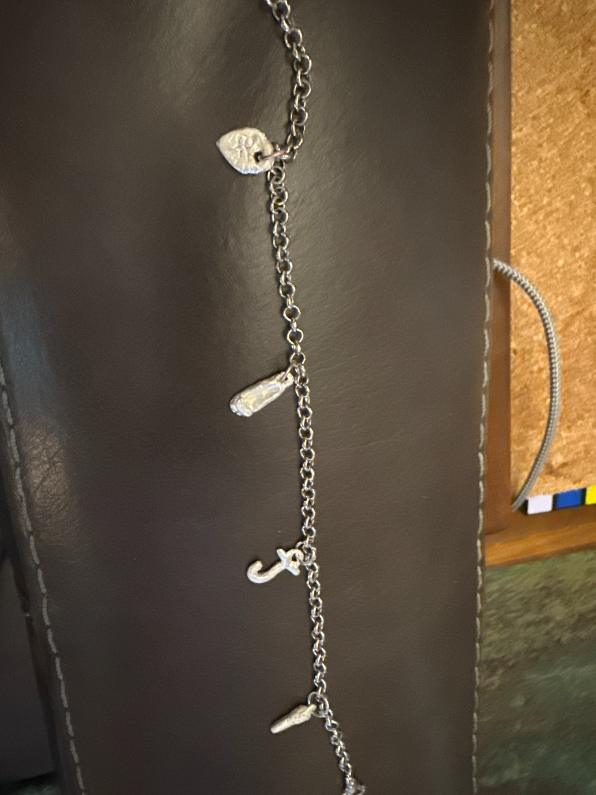
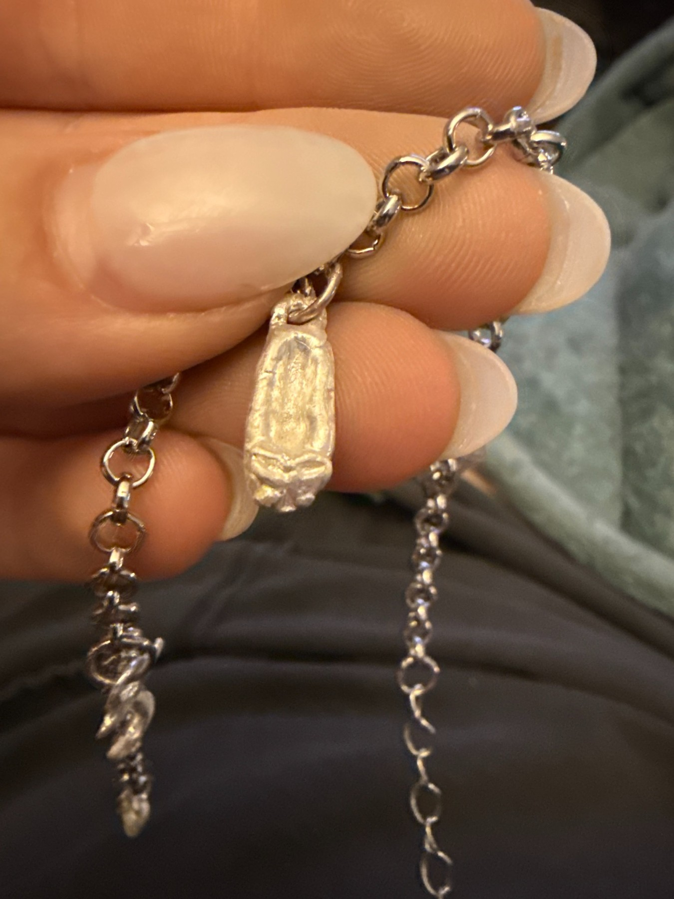
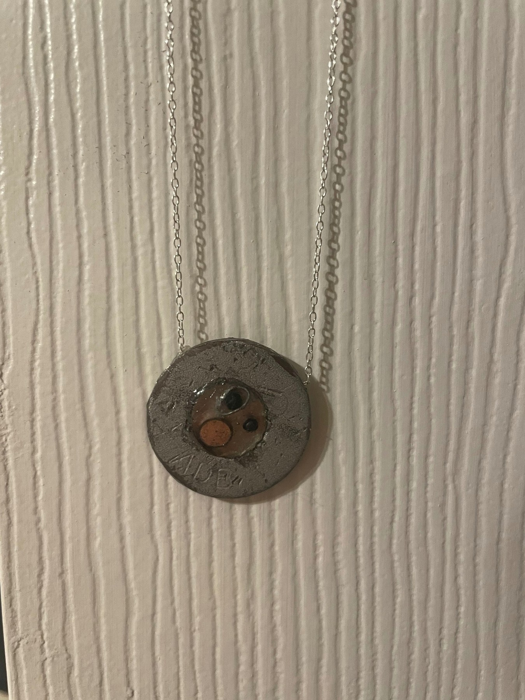
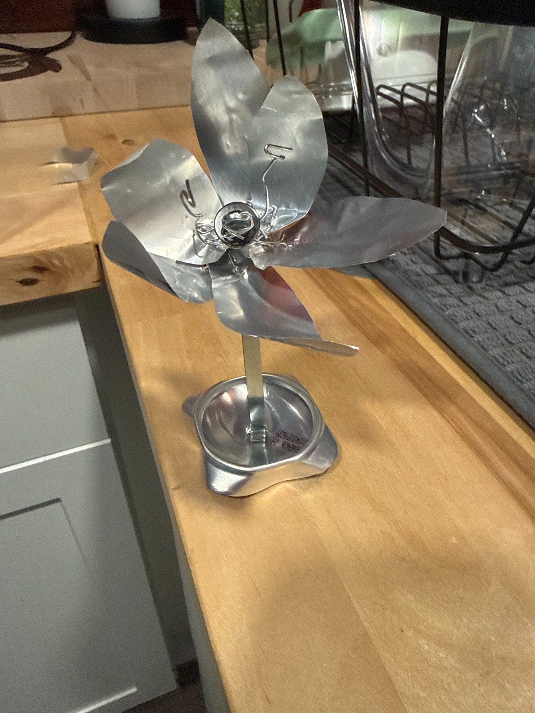
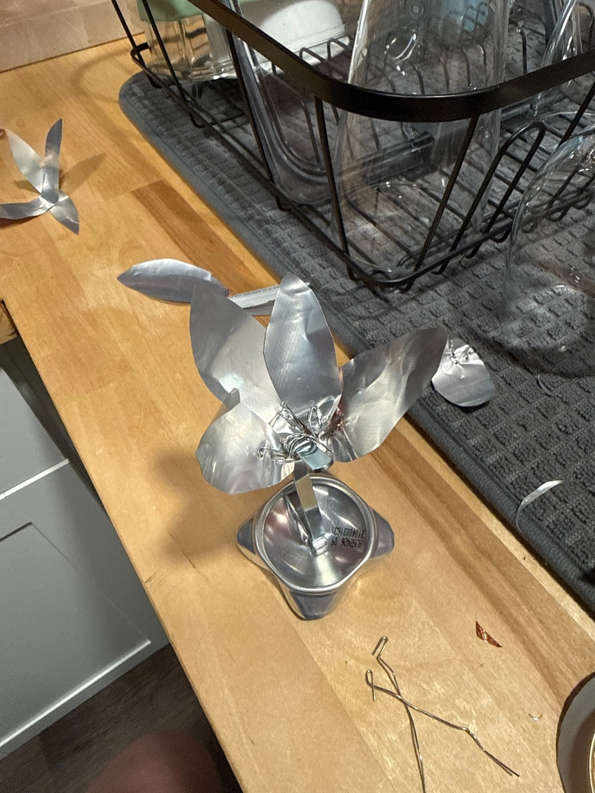
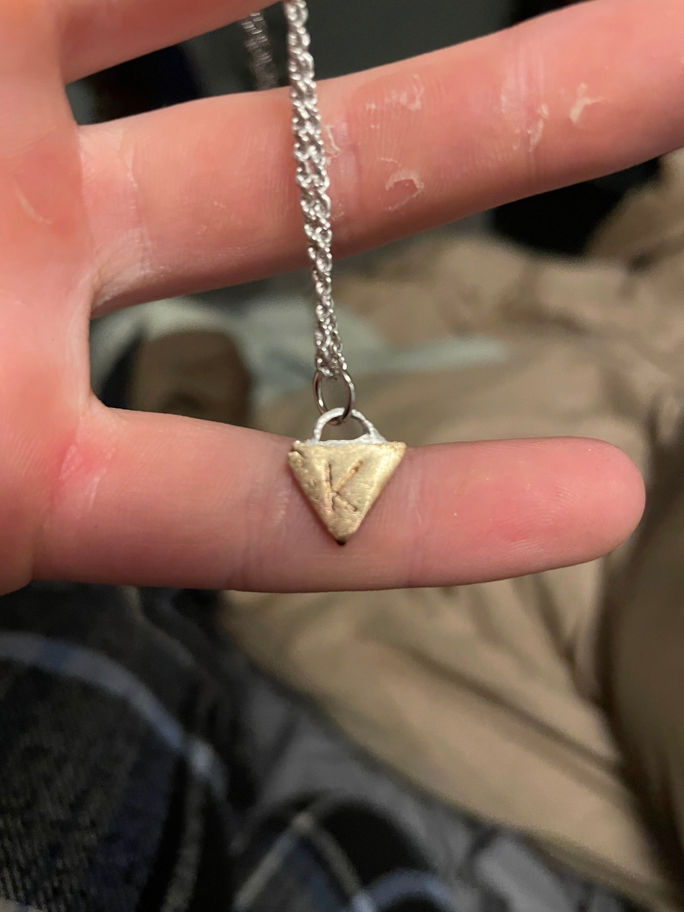
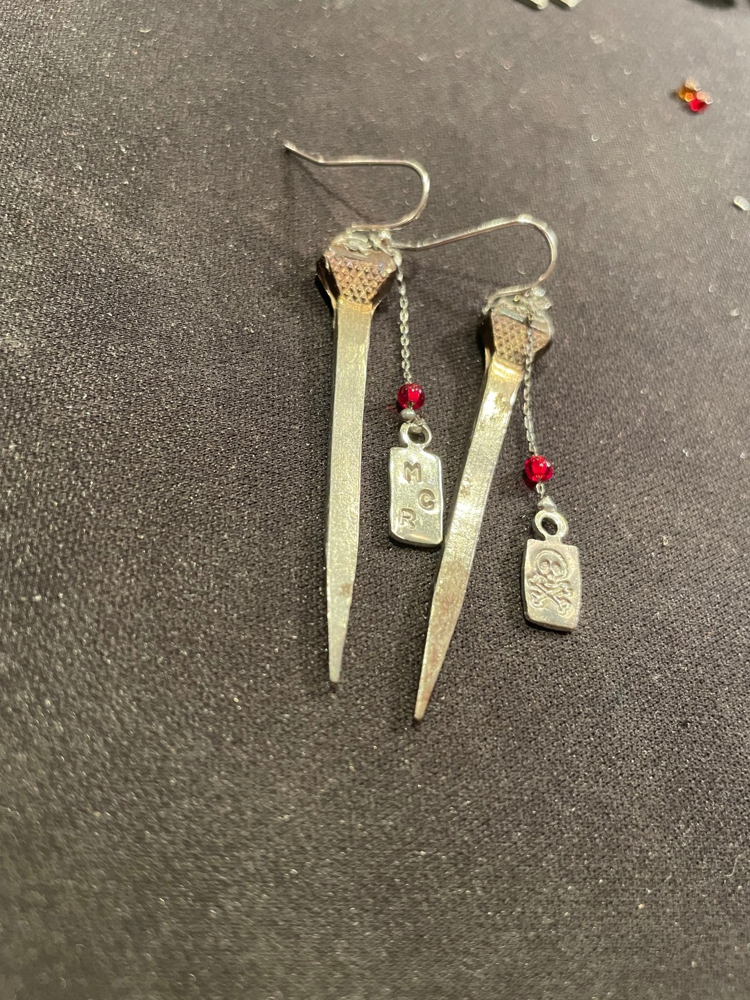
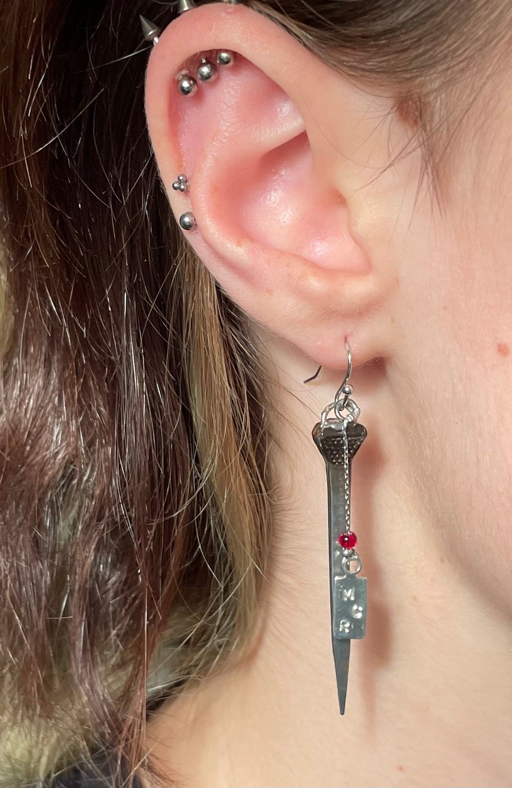
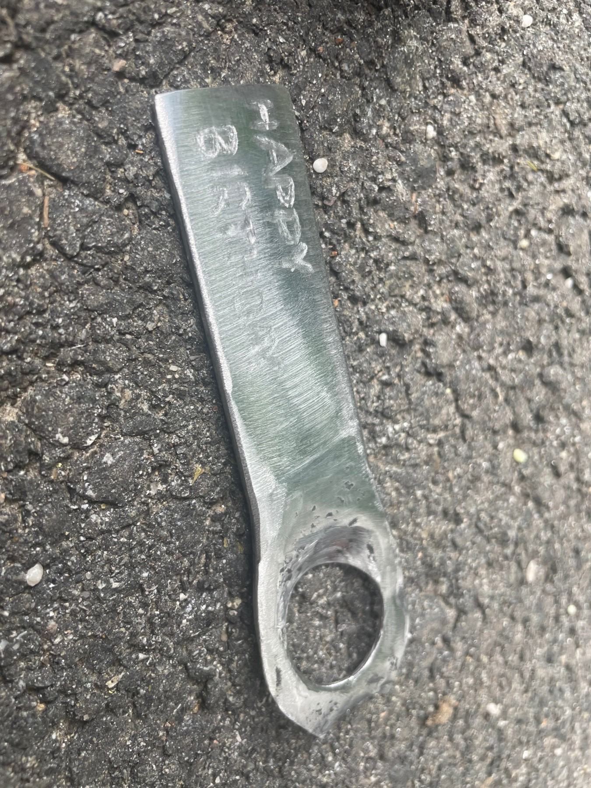
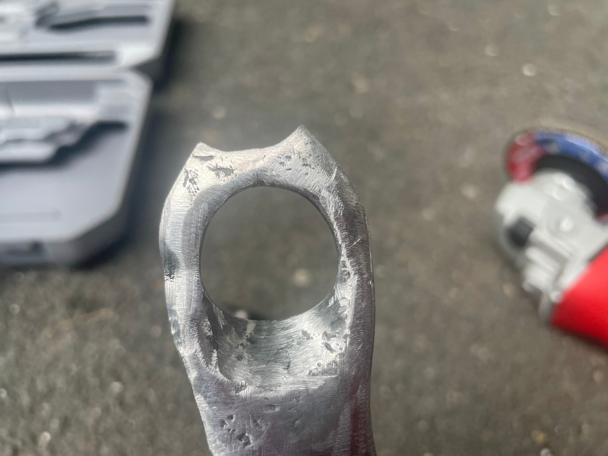

PIECE 01
Custom silver charm bracelet
A personalized silver charm bracelet with miniature charms, including a ballet slipper. This piece brings together small-scale detailing and wearable design.




SELECTED WORK / Welding · forging · plasma cutting · woodworking
Personal creative work
I enjoy turning everyday materials and scrap metal into functional objects, jewelry, and sculptural pieces. These personal projects explore the relationship between material, form, and craftsmanship.
METALWORKING · JEWELRY · REPURPOSED MATERIALS · PERSONAL DESIGN
Six personal projects. Select any photograph to view a larger version.
PIECE 01
A personalized silver charm bracelet with miniature charms, including a ballet slipper. This piece brings together small-scale detailing and wearable design.


PIECE 02
A washer transformed into a pendant using scrap metal, epoxy, and bearing elements arranged to represent a miniature solar system.

PIECE 03
A sculptural flower made from a repurposed tin can, with shaped metal petals, a wire center, and a freestanding base.


PIECE 04
A triangular pendant made from smelted bullet-shell material and engraved with the initial K.

PIECE 05
My Chemical Romance-inspired earrings made from nails, paired with red beads, chains and decorative metal charms.


PIECE 06
A personalized cat-shaped metal bottle opener made for my grandfather’s 70th birthday, combining a functional opening with a playful silhouette and birthday engraving.

